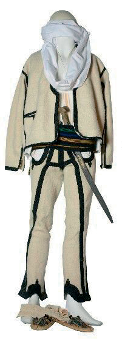
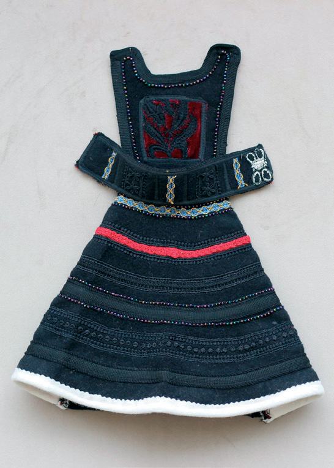
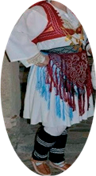
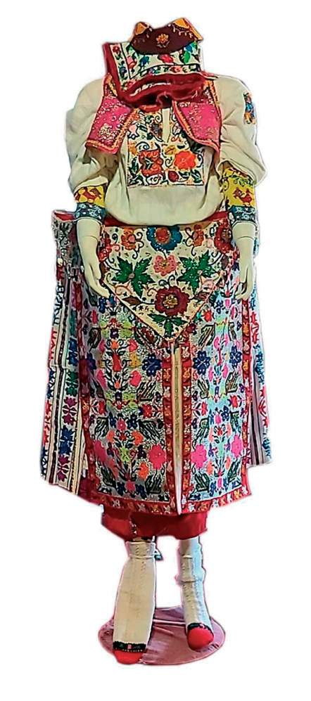

Veshjet tradicionale kosovare

Veshjet tradicionale të burrave zakonisht përbëhen nga një këmishë e bardhë dhe tirqit të punuar prej shajaku. Tirqit janë të zbukuruar me gajtanë me ngjyrë të zezë. Rreth tirqve është e vendosur shoka. Në kokë mbahet plisi, si simbol i shqiptarëve. Në disa treva, si në Rugovë p.sh., koka lidhet edhe me shall. Si mbathje janë përdorur opingat.

Xhubleta është veshje me skaj të valëzuar si zile, e cila mbahet nga dy shiritat mbi supe, vishet me një këmishë të bardhë prej liri me mëngë të gjata. Në këmbë mbathen çorapë leshi dhe opinga. Kjo veshje tradicionale shqiptare mbrohet nga UNESCO-ja.
Pothuajse të gjitha veshjet e grave janë të përbëra nga një këmishë e bardhë e gjatë, me mëngë të gjata, skajet e së cilës janë të qëndisura me ngjyra. Sipër, gratë mbajnë një jelek të zbukuruar me fije të arta. Dy pështjellakë janë gjithashtu karakteristikë e këtyre veshjeve. Çorapët janë prej leshi dhe opingat prej lëkure. Veshjet dallojnë sipas moshave; zakonisht veshjet e vajzave janë më të stolisura se ato të grave.

